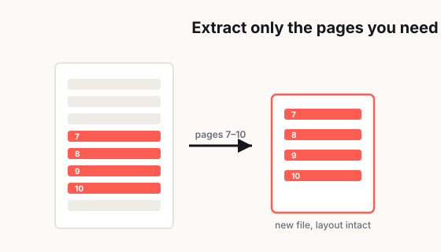

How to Extract Pages From a PDF Without Breaking the Layout
Taking a few pages out of a PDF sounds like one of those tasks that should take maybe 30 seconds. Open file, grab the pages you need, save, done. Easy, right?

Well, not always.
A lot of people find out the hard way that extracting pages from a PDF can go sideways fast. The new file looks cropped. The page orientation flips for no clear reason. A page that looked perfectly normal in the original document suddenly feels awkward and incomplete on its own. Sometimes the layout survives, but the numbering no longer makes sense. Other times the pages technically extract, but the final file looks messy enough that you hesitate to send it.
That's the annoying part. This isn't supposed to be hard. But it's one of those small admin tasks that becomes frustrating because it's easy to do badly without realizing it.
The good news is that you usually do not need complicated software skills to get this right. What you need is a cleaner way to think about the task before you click extract. Once you understand why PDF pages sometimes come out weird, it becomes much easier to avoid mistakes and end up with a file that still looks polished, readable, and professional.
After two decades in IT support — plenty of days with 400+ users from different countries to help — the request I heard constantly was "I only need a few pages out of this huge file," and the result was often a mangled, cropped, or out-of-order extract.
Pulling pages out — or slipping one in — was one of the most useful things for the secretaries and tender staff I helped. The usual situation was a deck or a tender where something important had to go into the middle at the last minute, or a few pages had become irrelevant and needed to come out. And the requests were almost always sudden; anyone who's done this work knows the "have it on my desk first thing tomorrow" kind of deadline. Being able to extract or insert pages quickly and cleanly, without scrambling the orientation or the page numbers, is exactly what saves you in those moments.
— Hill, 20 years in IT supportWhy extracted PDF pages sometimes look weird
The first thing to understand is that a PDF is not just a stack of digital paper. It is a packaged document format that tries to preserve layout, fonts, spacing, graphics, and page structure exactly as intended. That is why PDFs are great for sharing. But it is also why they can behave strangely when you start pulling pieces out.
When you extract pages, you are not simply taking a screenshot of a page and saving it somewhere else. You are creating a new document from part of an old one. That means the result can inherit some elements cleanly and lose context on others.
For example, a page may have been designed as part of a full report. Maybe page 12 starts in the middle of a section. Maybe it relies on a header from page 11 or a chart explanation from page 10. Technically, page 12 extracts just fine. But once it stands alone, it can feel abrupt or confusing. The layout may still be intact, but the meaning gets weaker because the surrounding context is gone.
There are also formatting issues that show up depending on how the PDF was created in the first place. Some files are exported from Word, Google Docs, InDesign, Excel, PowerPoint, or scanning software. Some are digitally generated and clean. Others are stitched together from images, print drivers, or old office systems. That matters because not every PDF has the same internal structure.
Here are a few common reasons extracted pages look off:
- The original file contains mixed page sizes.
- Some pages are portrait while others are landscape.
- The document uses crop boxes or trim boxes that behave differently in different viewers.
- The PDF includes scanned pages rather than true text-based pages.
- Headers, footers, and page numbers depend on the full document sequence.
- The page you extracted was never meant to stand alone.
In plain English, the page may not actually be broken. It just stops making visual or structural sense after being removed from the rest of the file.
Extracting, splitting, and printing to PDF are not the same thing
A lot of confusion starts here, because people use these terms like they mean the same thing. They do not.
Extracting pages usually means selecting specific pages from an existing PDF and saving them as a new PDF. The original document stays untouched, and the selected pages are copied into a separate file.
Splitting a PDF usually means dividing one PDF into multiple smaller PDFs. Sometimes that means one page per file. Sometimes it means chunks, like pages 1 to 5, 6 to 10, and 11 to 15. The goal is more about breaking a file into parts than selectively pulling out a small section.
Printing to PDF is different again. When you print selected pages to a new PDF, the software is often re-rendering those pages instead of simply extracting their original PDF structure. That can be useful in some cases, but it can also flatten interactive elements, change margins, affect links, alter metadata, or create slight visual differences.
This matters because the method you choose affects the result.
If you want the cleanest copy of pages exactly as they appear in the original, direct extraction is usually the best option.
If you want to rebuild the selected pages into something more self-contained, printing to PDF can sometimes help, especially when the source PDF is messy or behaves strangely.
If you want organized document chunks for storage, archiving, or team use, splitting may be the better workflow.
The biggest mistake people make is rushing into the wrong method. They think, "I just need pages 7 to 10," and click the first option they see. Then they wonder why the file lost links, why margins shifted, or why the result looks slightly different.
The tool matters, but the method matters even more.
How to preserve formatting and readability
If your goal is to send a clean, professional PDF, preserving layout is really about preserving trust. If the file looks sloppy, people assume the document itself is sloppy. Even if the content is correct, bad formatting creates doubt.
So before extracting anything, slow down for a minute and check the source file first.
Look at these things:
- Are all selected pages the same orientation?
- Do any of the pages include full-width tables, charts, or slides?
- Are there visible headers or footers tied to the original report?
- Do the pages start or end in the middle of a thought?
- Is the file text-based or scanned?
- Do page numbers appear on the pages themselves?
Once you check those basics, the extraction process gets much safer.
1. Extract from the original source PDF whenever possible
Do not extract from a previously compressed, printed, re-saved, or forwarded version unless that is your only option. Every extra round of conversion increases the chance of weird output. If you have access to the original exported file, start there.
2. Keep page orientation consistent
If your selected pages include both portrait and landscape pages, make sure that is intentional. Mixed orientation is not always wrong, but it can feel clumsy if the recipient is viewing on mobile or scrolling quickly. If the landscape page is necessary, keep it. Just check that it opens correctly and doesn't appear rotated.
3. Watch for cropped content
This is a big one with spreadsheets, slides, architectural drawings, reports, or wide tables. A page may look okay in one viewer but feel cramped or partially hidden in another. After extraction, zoom in and confirm that charts, tables, and margins still display properly.
4. Avoid unnecessary reprocessing
Every time you "optimize," "compress," "print," or "convert" a PDF, you risk changing the file. If extraction alone gives you a clean result, stop there. More processing does not automatically mean a better file.
5. Check readability on desktop and mobile
A PDF can look fine on a large screen and still be annoying on a phone. Tiny text, awkward landscape pages, and dense scanned pages become much harder to read on smaller devices. If the extracted file is likely to be opened on mobile, review it that way before sending.
6. Keep context when context matters
Sometimes preserving layout is not enough. You also need to preserve meaning. If the extracted pages begin with "continued from previous section," refer to an earlier chart, or rely on definitions introduced earlier, consider adding one more page before or after so the file makes sense on its own.
That small choice often makes the difference between a file that merely works and a file that feels complete.
When you should keep the original page numbers
This is where people accidentally create confusion.
A lot of extracted PDFs still show their original page numbers on the bottom of each page. For example, your new file might contain three pages labeled 14, 15, and 16. Some people think that looks wrong and try to remove or replace the numbering.
But keeping original numbering is often the smarter move.
If the pages came from a contract, manual, report, proposal, court filing, research packet, training deck, or official document, original page numbers help the reader understand exactly where those pages came from. That is useful for reference, especially when people need to cross-check against the full document later.
You should usually keep original page numbers when:
- The extracted pages are part of a larger formal document.
- The recipient may compare them to the original file.
- Accuracy and traceability matter.
- The content may be quoted, reviewed, or approved later.
You might consider new numbering or no numbering when:
- The extracted file is being repurposed into a standalone handout.
- The original numbering would confuse the audience.
- The pages are being combined with content from another document.
- You are creating a cleaned-up client-facing resource rather than a document excerpt.
A good rule is simple: if the pages are still acting like excerpts, keep the original numbering. If they are becoming a brand-new document, think about whether a cleaner numbering system makes more sense.
Just do not create confusion by pretending excerpted pages are fully standalone when they are not.
How to name extracted files so people instantly understand them
File naming is one of those boring details that becomes incredibly important the second someone has to search for the document later.
A bad file name creates friction. A vague one creates waste. A misleading one creates mistakes.
Names like:
- final.pdf
- newfile.pdf
- pages.pdf
- document-updated.pdf
are almost guaranteed to annoy somebody later, including you.
A better file name tells the reader three things right away:
- What the document is
- Which section or pages it contains
- Whether it is a source excerpt or a standalone version
Here are some naming patterns that work well:
employee-handbook-pages-12-16.pdfclient-proposal-pricing-section-pages-8-10.pdfinsurance-policy-claims-process-excerpt.pdfproduct-catalog-selected-pages-21-24.pdfonboarding-guide-benefits-section.pdf
These names are not glamorous, but they are useful. That is what matters.
If you're sending files to clients, colleagues, or users who may download multiple PDFs in the same week, clarity beats cleverness every time.
A few practical naming tips:
- Use hyphens, not spaces, if the file may live on the web.
- Avoid dates unless the date actually matters.
- Avoid "final" unless it is truly final.
- Include page ranges when the file is an excerpt.
- Use plain English that still makes sense six months later.
Since you're publishing online and want search traffic too, this matters even more. Clean file names help both users and your site structure. A descriptive slug and a descriptive downloadable file name both make the content easier to manage.
A quick quality-control step before sending or publishing
This part takes maybe two minutes, and it saves a ridiculous amount of embarrassment.
Before you send or upload an extracted PDF, do this quick check:
Open the file in at least two viewers
If possible, check it in a browser and in a dedicated PDF app. Sometimes a file looks fine in one viewer and odd in another.
Scroll every page from top to bottom
Do not assume page 1 looks good so page 4 must also be fine. Look for cutoff text, missing graphics, wrong orientation, weird blank areas, and odd margins.
Zoom in on charts, tables, and small text
This is where layout issues often hide. If the extracted page contains technical content, price tables, or form fields, zoom in and make sure nothing became blurry or clipped.
Check page order
This sounds obvious, but it gets missed all the time. Make sure the pages are in the intended sequence.
Ask one simple question
If someone received this file with zero explanation, would it make sense? That question catches more problems than almost anything else. A PDF can be technically correct and still be practically confusing.
Rename before you send
Do not wait until after attaching it to the email. Name it properly first so the file carries its meaning wherever it goes. That last step is especially important for business, legal, admin, education, and support workflows. A clean PDF does not just look better. It reduces questions, delays, and unnecessary back-and-forth.
Common mistakes people make when extracting PDF pages
Let's be honest, most PDF mistakes are not dramatic. They are just small, avoidable choices that create unnecessary cleanup later.
Here are the ones that come up most often:
- Extracting only the "needed" page without checking whether it depends on the page before it.
- Using print to PDF when direct extraction would have preserved the document better.
- Sending pages with original numbering removed, which makes reference harder.
- Forgetting to review orientation changes.
- Saving the file with a meaningless name.
- Compressing the extracted file immediately, even when size was not the problem.
- Assuming that what looks fine on desktop will also look fine on mobile.
- Not noticing that a wide table is basically unreadable after extraction.
None of these mistakes are rare. In fact, they are normal. The difference between a messy result and a polished one usually comes down to whether you reviewed the file with a little intention.
A simple workflow that works almost every time
If you want the safest repeatable process, use this:
- Open the original PDF.
- Identify the exact pages you need.
- Check whether those pages rely on nearby pages for context.
- Extract the pages directly into a new PDF.
- Open the new file and verify layout, orientation, and readability.
- Decide whether original page numbers should stay.
- Rename the file clearly.
- Review it once on desktop and once on mobile if the recipient may use a phone.
- Send or publish only after that check.
That is it.
It is not fancy, but it works. And honestly, that is what most people need. Not a complicated PDF workflow. Just a reliable one.
Final thought
Extracting pages from a PDF should be simple, but simple tasks are often where messy results slip through. The good news is that clean extraction is less about special tools and more about paying attention to context, formatting, readability, and file naming.
Once you stop treating extracted pages like random scraps and start treating them like standalone documents with a job to do, the quality goes up fast. The layout stays cleaner, the file makes more sense, and the person receiving it does not have to guess what they are looking at.
And really, that is the goal. Not just getting pages out of a PDF, but getting them out in a way that still feels complete, usable, and professional.
Related reading: Rebuilding a document from pieces? See how to merge PDFs without making a mess; to slim the result, read how to compress a PDF without ruining quality.
Frequently asked
What is the best way to extract pages from a PDF without changing the formatting?
The safest method is usually direct page extraction from the original PDF rather than printing to PDF or converting the file multiple times. That helps preserve the original layout, spacing, and readability.
Why do extracted PDF pages sometimes look cropped or rotated?
This usually happens because the original file contains mixed page sizes, different orientations, or unusual crop settings. Some PDF viewers also display the same file differently.
Is extracting pages the same as splitting a PDF?
Not exactly. Extracting usually means selecting certain pages and saving them as a new file, while splitting usually means dividing the whole PDF into multiple smaller documents.
Should I keep the original page numbers in an extracted PDF?
Yes, if the pages are still being used as excerpts from a larger report, contract, or manual. Keeping original numbering makes the file easier to reference later.
How should I name an extracted PDF file?
Use a clear file name that explains what the document is and which pages it includes, such as report-pages-12-15.pdf or handbook-benefits-section.pdf.
What should I check before sending an extracted PDF?
Review page order, orientation, cropping, readability, and file naming. It is also smart to open the file in more than one viewer if possible.